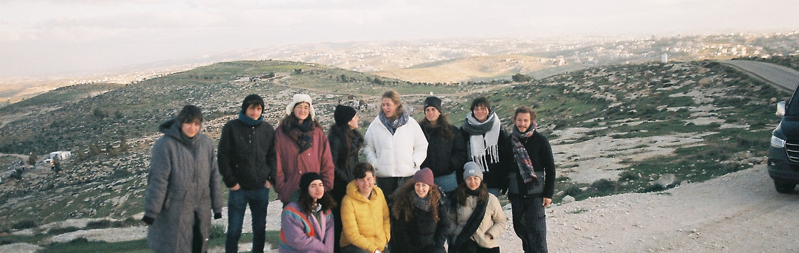

מי אנחנו - מדרשת דרור
בית המדרש ליהדות הומניסטית פוליטית
מהי מדרשת דרור?
מדרשת דרור היא בית מדרש ליהדות הומניסטית פוליטית. המדרשה פועלת לפיתוח מנהיגות אזרחית צעירה המבקשת לקחת אחריות על עתיד החברה הישראלית מתוך עמדה מוסרית וערכית.
החזון שלנו
אנו מאמינים כי לימוד מעמיק הוא המפתח לתיקון עולם. כפי שנאמר: "לא המדרש עיקר אלא המעשה" – הלימוד שלנו אינו מסתכם בידע תיאורטי, אלא מהווה כלי לשינוי תודעתי וחברתי. אנו שואפים לכונן חברה שבה ערכי החירות, השוויון וכבוד האדם הם התשתית לחיים המשותפים בארץ.

ארבעת עמודי האמונה של המדרשה
בקיאות (Beki'ut)
האימון: לימוד מעמיק של עובדות, נתונים, היסטוריה ומשפט. ידע הוא כוח אל מול הבורות והסתה.
המשמעות הרוחנית: עמידה על האמת היא תנאי ראשון לחירות.
אלו ואלו (Elu ve-Elu)
האימון: היכולת להכיל מורכבות, להקשיב לנרטיבים שונים ולזהות את האנושיות גם במקום של קונפליקט.
המשמעות הרוחנית: ההכרה כי המציאות רב-גונית וכי לכל אדם יש חלק בצלם אלוהים.
עדות (Testimony)
האימון: יציאה לשטח, מפגש בלתי אמצעי עם המציאות ושמיעת עדויות ממקור ראשון.
המשמעות הרוחנית: החובה המוסרית לא לעצום עיניים אל מול עוול.
שפה (Language)
האימון: פיתוח שפה הומניסטית-יהודית חדשה המתרגמת ערכים אוניברסליים לתרבות המקומית.
המשמעות הרוחנית: "חיים ומוות ביד לשון" – המילים שאנו בוחרים בוראות את עולמנו.
למה חשוב "לתרגל" הומניזם?
הכנעת האדישות
הומניזם דורש מאמץ אקטיבי להתנגד להרגל של התעלמות מסבלו של האחר.
מתורה להלכה
הפיכת התיאוריה למעשה יומיומי ופרוגרסיבי בשטח.
בניית קהילה
יצירת רשת ביטחון אנושית המאפשרת עמידה איתנה אל מול אתגרי השעה.
מקצועיות
לימוד והדרכה ברמה הגבוהה ביותר, מתוך אחריות לדיוק ולעומק.
בואו להיות חלק מהשינוי
הצטרפו אלינו לסמינר הבא או תמכו בפעילות המדרשה כדי שנוכל להמשיך ולהרחיב את מעגלי ההשפעה.